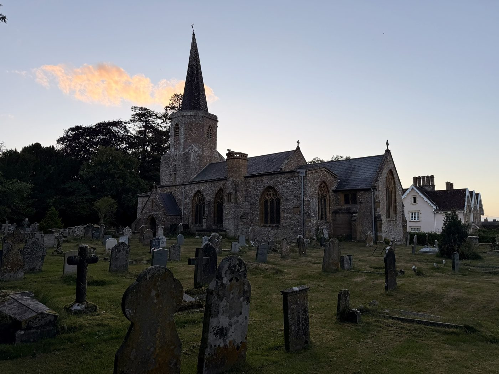
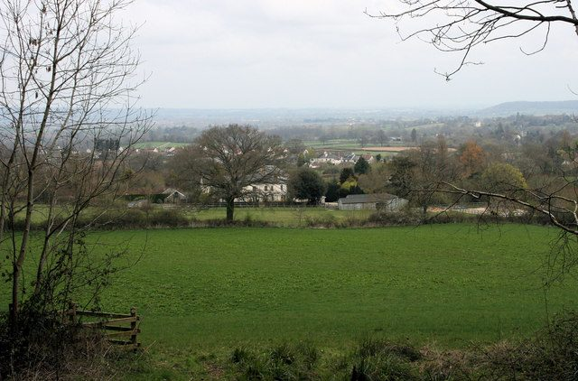
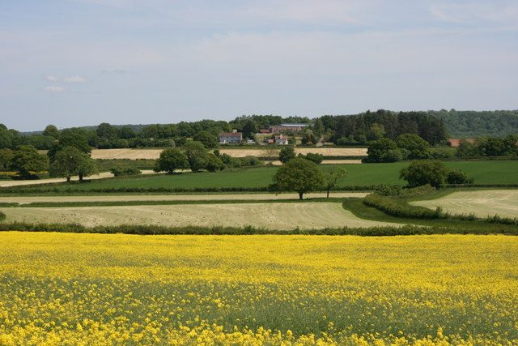

This is what a note on the wall looks like. Say who you are, which family you belong to if any, where you have ended up, and what you would like to find. Notes are read by a person before they appear.
Example note
Pitminster sits four miles south of Taunton, where the Vale of Taunton Deane climbs into the Blackdown Hills. Its church has stood since about 1300. Its name was already old when King Athelstan gave the estate to the Bishop of Winchester in 938. And in the 1630s one of its families crossed the Atlantic and became, by way of Connecticut, one of the large families of America.
This site is for the people who live here, the people who worship here, and the people far away who come back looking for a name on a brass.


Grade I listed and begun around 1300 on the site of a Saxon church. A lead spire that is said to lean, a fifteenth-century font, a Jacobean pulpit with its canopy, and three generations of the Coles family lying in the chancel.
Inside the church
Pitminster, Blagdon Hill, Angersleigh and the hamlets between them. A bishop's deer park where King John hunted, a Tudor house at Poundisford, a hymn written for a Sunday school, and a pageant that put a thousand years of it on stage in 1976.
Around the village
Richard Trott was baptised here in 1584, married here in 1615, and by 1637 had sailed for New England. His family became the Treats of Connecticut, Massachusetts and Maine, and they have been coming back ever since: a brass in 1902, a window in 1989, a reunion in 2026.
The Treats and their cousinsNotes from descendants, villagers and visitors. Anyone can write; a person reads each note before it appears.
This is what a note on the wall looks like. Say who you are, which family you belong to if any, where you have ended up, and what you would like to find. Notes are read by a person before they appear.
Example note
Villagers are welcome here too: a date for the diary, a photograph from a drawer, a correction to something on these pages. The site is only as good as the people who write on it.
Example note
The church is on Church Lane, Pitminster, Taunton TA3 7AZ. Holy Communion is held on the fourth Sunday of the month at 10.30am, shared with St Nicholas, Corfe; the rest of the month the benefice's services move among its six churches, and A Church Near You has the current list.
The building is looked after by its parish, which has to find the money to keep a seven-hundred-year-old church standing. Gifts go to the parish directly, never through this site.
Treatopoly runs the Treats' four centuries around a board, from Set Sail 1637 to Return to Pitminster, and plays online with family in other houses. The Treat Trail makes the same journey the hard way, one stop and one ration at a time.